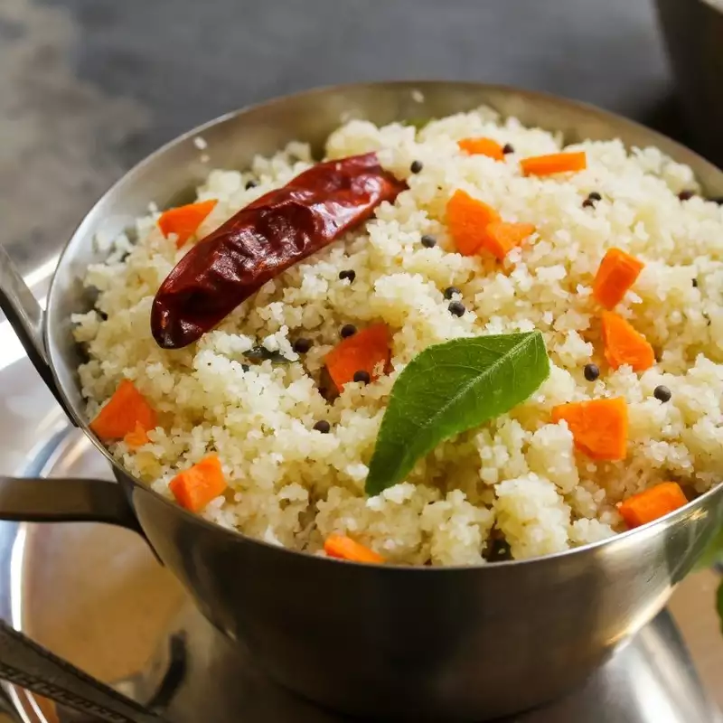

Vegan Breakfast Recipes
Masala Dosa

Ingredients
- 2 cups rice
- 1 cup urad dal (split black gram)
- 1/2 cup chana dal (split chickpeas)
- 1/2 tsp fenugreek seeds
- Salt to taste
- Water as needed
- Oil for cooking
Procedure:
- Rinse and soak the rice, urad dal, chana dal, and fenugreek seeds together for at least 4-5 hours.
- Grind the soaked ingredients into a smooth batter, adding water as needed.
- Add salt to the batter and mix well. Let it ferment overnight or for 8-10 hours.
- Heat a non-stick pan or griddle. Pour a ladleful of batter and spread it in a circular motion to form a thin dosa.
- Drizzle oil around the edges and cook until golden brown.
- Serve hot with coconut chutney and sambar.
Rava Idli

Ingredients
- 1 cup rava (semolina)
- 1/2 cup vegan yogurt
- 1/2 cup water
- 1/4 tsp baking soda
- Salt to taste
- 1 tbsp oil
- 1 tsp mustard seeds
- 1 tsp urad dal
- 1 tsp chana dal
- A few curry leaves
- 1 green chili, chopped
- 1/2 inch ginger, grated
Procedure
- Dry roast the rava in a pan until it turns light golden. Set aside to cool.
- In a bowl, mix the roasted rava, vegan yogurt, water, and salt to make a smooth batter.
- Heat oil in a small pan, add mustard seeds, urad dal, chana dal, curry leaves, green chili, and ginger. Sauté for a minute.
- Add this tempering to the batter and mix well.
- Just before steaming, add baking soda to the batter and mix gently.
- Pour the batter into greased idli molds and steam for 10-12 minutes.
- Serve hot with coconut chutney.
Oats Porridge

Ingredients
- 1 cup rolled oats
- 2 cups almond milk
- 1 tbsp maple syrup
- 1/2 tsp cinnamon powder
- Fresh fruits and nuts for topping
Procedure
- In a saucepan, bring almond milk to a boil.
- Add oats and cook on low heat, stirring occasionally, until the oats are tender and the porridge is thick.
- Stir in maple syrup and cinnamon powder.
- Serve hot, topped with fresh fruits and nuts.
Chia Pudding

Ingredients
- 1/4 cup chia seeds
- 1 cup almond milk
- 1 tbsp maple syrup
- 1/2 tsp vanilla extract
- Fresh fruits for topping
Procedure
- In a bowl, combine chia seeds, almond milk, maple syrup, and vanilla extract.
- Mix well and let it sit for 5 minutes. Stir again to prevent clumping.
- Cover and refrigerate for at least 2 hours or overnight.
- Serve chilled, topped with fresh fruits.
Vegan Pancakes

Ingredients
li>1 cup all-purpose flour
- 1 tbsp sugar
- 1 tbsp baking powder
- 1/8 tsp salt
- 1 cup almond milk
- 2 tbsp vegetable oil
- 1 tsp vanilla extract
Procedure
- In a large bowl, whisk together the flour, sugar, baking powder, and salt.
- In another bowl, mix almond milk, vegetable oil, and vanilla extract.
- Pour the wet ingredients into the dry ingredients and stir until just combined.
- Heat a non-stick pan over medium heat and lightly grease it with oil.
- Pour 1/4 cup of batter onto the pan for each pancake.
- Cook until bubbles form on the surface, then flip and cook until golden brown.
- Serve hot with maple syrup and fruits.
Smoothie Bowl

Ingredients
- 1 banana, frozen
- 1/2 cup frozen berries
- 1/2 cup almond milk
- 1 tbsp almond butter
- Fresh fruits, granola, and chia seeds for topping
Procedure:
- In a blender, combine the frozen banana, berries, almond milk, and almond butter.
- Blend until smooth and thick.
- Pour into a bowl and top with fresh fruits, granola, and chia seeds.
- Serve immediately.
Poha

Ingredients
- 2 cups poha (flattened rice)
- 1 onion, finely chopped
- 1 potato, finely chopped
- 1 green chili, chopped
- 1/4 tsp turmeric powder
- Salt to taste
- 2 tbsp oil
- 1 tsp mustard seeds
- A few curry leaves
- 1/2 tsp sugar
- Lemon juice and coriander leaves for garnish
Procedure:
- Rinse the poha in a colander under running water until it softens. Drain and set aside.
- Heat oil in a pan, add mustard seeds and let them splutter.
- Add curry leaves, green chili, and onions. Sauté until onions turn translucent.
- Add potatoes and cook until they are tender.
- Add turmeric powder, salt, and sugar. Mix well.
- Add the soaked poha and gently mix everything together.
- Cook for 2-3 minutes, stirring occasionally.
- Garnish with lemon juice and coriander leaves before serving.
Upma

Ingredients
- 1 cup rava (semolina)
- 2 cups water
- 1 onion, finely chopped
- 1 green chili, chopped
- 1/2 inch ginger, grated
- Salt to taste
- 2 tbsp oil
- 1 tsp mustard seeds
- 1 tsp urad dal
- 1 tsp chana dal
- A few curry leaves
- Coriander leaves for garnish
Procedure:
- Dry roast the rava in a pan until it turns light golden. Set aside to cool.
- Heat oil in a pan, add mustard seeds, urad dal, and chana dal. Let them splutter.
- Add curry leaves, green chili, and onions. Sauté until onions turn translucent.
- Add ginger and sauté for another minute.
- Add water and salt, and bring it to a boil.
- Gradually add the roasted rava, stirring continuously to avoid lumps.
- Cook on low heat until the rava absorbs all the water and becomes soft.
- Garnish with coriander leaves and serve hot.
Vegan Muffins

Ingredients
- 1 1/2 cups all-purpose flour
- 1/2 cup sugar
- 1 tbsp baking powder
- 1/2 tsp salt
- 1/2 cup almond milk
- 1/4 cup vegetable oil
- 1 tsp vanilla extract
- 1 cup blueberries or other fruits
Procedure:
- Preheat the oven to 375°F (190°C). Line a muffin tin with paper liners.
- In a large bowl, whisk together the flour, sugar, baking powder, and salt.
- In another bowl, mix almond milk, vegetable oil, and vanilla extract.
- Pour the wet ingredients into the dry ingredients and stir until just combined.
- Fold in the blueberries or other fruits.
- Divide the batter evenly among the muffin cups.
- Bake for 20-25 minutes or until a toothpick inserted into the center comes out clean.
- Let cool on a wire rack before serving.
Ragi Muffins

Ingredients
- 1/2 cup ragi flour
- 2 cups water
- 1 cup almond milk
- 2 tbsp jaggery or sugar
- 1/4 tsp cardamom powder
- Nuts and fruits for topping
Procedure:
- In a saucepan, mix ragi flour and water. Stir well to avoid lumps.
- Cook on medium heat, stirring continuously until the mixture thickens.
- Add almond milk and jaggery. Cook for another 5-7 minutes, stirring occasionally.
- Add cardamom powder and mix well.
- Serve hot, topped with nuts and fruits.
Vegan French Toast

Ingredients
- 1 cup almond milk
- 1 tbsp ground flaxseed
- 1 tbsp maple syrup
- 1 tsp vanilla extract
- 1/2 tsp cinnamon powder
- 4 slices of whole grain bread
- Oil for cooking
Procedure:
- In a shallow bowl, whisk together almond milk, ground flaxseed, maple syrup, vanilla extract, and cinnamon powder.
- Heat a non-stick pan over medium heat and lightly grease it with oil.
- Dip each slice of bread into the mixture, coating both sides.
- Cook the bread slices on the pan until golden brown on both sides.
- Serve hot with maple syrup and fresh fruits.
Aloo Paratha

Ingredients
- 2 cups whole wheat flour
- Water as needed
- 2 large potatoes, boiled and mashed
- 1 onion, finely chopped
- 2 green chilies, chopped
- 1/2 tsp cumin seeds
- 1/2 tsp garam masala
- 1/2 tsp turmeric powder
- Salt to taste
- 2 tbsp oil
- Ghee or oil for cooking
Procedure:
- In a bowl, mix the whole wheat flour with water to make a soft dough. Set aside.
- In another bowl, combine the mashed potatoes, onions, green chilies, cumin seeds, garam masala, turmeric powder, salt, and oil.
- Divide the dough into equal-sized balls. Flatten each ball and place a portion of the potato filling in the center.
- Fold the edges of the dough over the filling and roll it out gently.
- Heat a tawa or griddle and cook the paratha, applying ghee or oil, until both sides are golden brown.
- Serve hot with pickle and vegan yogurt.
Avocado Toast

Ingredients
- 2 ripe avocados
- 1 lemon, juiced
- Salt and pepper to taste
- 4 slices of whole grain bread
- Red pepper flakes (optional)
- Cherry tomatoes for garnish
Procedure:
- In a bowl, mash the avocados with lemon juice, salt, and pepper.
- Toast the bread slices until golden and crisp.
- Spread the mashed avocado mixture onto the toasted bread.
- Sprinkle with red pepper flakes if desired and garnish with cherry tomatoes.
- Serve immediately.
Fruit Salad

Ingredients
- 1 apple, chopped
- 1 banana, sliced
- 1 orange, segmented
- 1 cup grapes
- 1 cup berries (strawberries, blueberries, raspberries)
- 1 tbsp lemon juice
- 1 tbsp maple syrup
- Fresh mint leaves for garnish
Procedure:
- In a large bowl, combine all the chopped fruits.
- Drizzle with lemon juice and maple syrup.
- Toss gently to coat the fruits evenly.
- Garnish with fresh mint leaves.
- Serve immediately or chill until ready to serve.
Quinoa breakfast Bowl

Ingredients
- 1 cup quinoa
- 2 cups water
- 1/2 cup almond milk
- 1 tbsp maple syrup
- 1/2 tsp cinnamon powder
- Fresh fruits and nuts for topping
Procedure:
- Rinse the quinoa under running water.
- In a saucepan, bring water to a boil and add quinoa. Reduce heat and simmer until quinoa is cooked and water is absorbed.
- Add almond milk, maple syrup, and cinnamon powder to the cooked quinoa. Stir well.
- Serve hot, topped with fresh fruits and nuts.
Non-Vegan Breakfast Recipes
Masala Omelette

Ingredients
- 3 eggs
- 1 onion, finely chopped
- 1 tomato, finely chopped
- 1 green chili, chopped
- 1/4 cup cilantro, chopped
- Salt and pepper to taste
- 1/4 tsp turmeric powder
- 1/4 tsp cumin powder
- 1 tbsp oil or butter
Procedure:
- In a bowl, beat the eggs with salt, pepper, turmeric powder, and cumin powder.
- Add chopped onions, tomatoes, green chili, and cilantro to the beaten eggs.
- Heat oil or butter in a pan over medium heat.
- Pour the egg mixture into the pan and spread it evenly.
- Cook until the omelette is set and golden brown on the bottom.
- Flip and cook the other side until done.
- Serve hot with toast.
Scrambled Eggs

Ingredients
- 3 eggs
- 1/4 cup milk
- Salt and pepper to taste
- 1 tbsp butter
Procedure
- In a bowl, whisk together the eggs, milk, salt, and pepper.
- Heat butter in a non-stick pan over medium heat.
- Pour the egg mixture into the pan and let it sit for a few seconds.
- Gently stir the eggs with a spatula until they are just set but still creamy.
- Serve hot.
>
Egg Bhurji

Ingredients
- 3 eggs
- 1 onion, finely chopped
- 1 tomato, finely chopped
- 1 green chili, chopped
- 1/4 cup cilantro, chopped
- Salt and pepper to taste
- 1/4 tsp turmeric powder
- 1/4 tsp cumin powder
- 1 tbsp oil
Procedure
- In a bowl, beat the eggs with salt, pepper, turmeric powder, and cumin powder.
- Heat oil in a pan over medium heat.
- Add chopped onions and sauté until translucent.
- Add chopped tomatoes and green chili, and cook until the tomatoes are soft.
- Pour the beaten eggs into the pan and stir continuously until the eggs are cooked.
- Garnish with cilantro and serve hot.
Chicken Sausage

Ingredients
- 500g ground chicken
- 1 onion, finely chopped
- 2 cloves garlic, minced
- 1 tsp paprika
- 1 tsp black pepper
- 1 tsp salt
- 1/2 tsp dried thyme
- 1/2 tsp dried sage
- 1/4 tsp red pepper flakes
- 1 tbsp olive oil
Procedure
- In a bowl, combine all the ingredients and mix well.
- Divide the mixture into equal portions and shape them into sausage patties.
- Heat olive oil in a pan over medium heat.
- Cook the sausage patties for about 5-6 minutes on each side or until fully cooked.
- Serve hot.
Breakfast Burrito with Eggs

Ingredients
- 4 large eggs
- 1/4 cup milk
- Salt and pepper to taste
- 1/2 cup shredded cheese (cheddar or your choice)
- 4 flour tortillas
- 1/2 cup salsa
- 1/2 cup cooked bacon or sausage, crumbled (optional)
- 1/2 cup diced bell peppers (optional)
- 1/4 cup chopped cilantro (optional)
- Cooking spray or butter
Procedure
- In a bowl, whisk together the eggs, milk, salt, and pepper.
- Heat a non-stick skillet over medium heat and lightly grease with cooking spray or butter.
- Pour the egg mixture into the skillet and cook, stirring frequently, until the eggs are scrambled and cooked through.
- Warm the tortillas in a separate skillet or microwave until pliable.
- Divide the scrambled eggs evenly among the tortillas.
- Top each with shredded cheese, salsa, cooked bacon or sausage, bell peppers, and cilantro as desired.
- Roll up the tortillas to form burritos and serve immediately.
Paneer Paratha

Ingredients
- 1 cup whole wheat flour
- 1/4 cup water (as needed)
- 1/2 cup grated paneer (Indian cottage cheese)
- 1 small onion, finely chopped
- 1 green chili, finely chopped (optional)
- 1/2 teaspoon cumin powder
- 1/2 teaspoon garam masala
- Salt to taste
- 2 tablespoons chopped coriander leaves
- Ghee or oil for cooking
Procedure:
- In a bowl, mix the wheat flour with enough water to form a soft dough. Cover and set aside for 15 minutes.
- In another bowl, mix grated paneer, chopped onion, green chili, cumin powder, garam masala, salt, and coriander leaves.
- Divide the dough into small balls. Roll out each ball into a small circle.
- Place a spoonful of the paneer mixture in the center of each circle. Bring the edges together to seal and form a ball again.
- Roll out the stuffed ball into a flat paratha, being careful not to let the filling spill out.
- Heat a tawa or skillet and cook the paratha on both sides, applying ghee or oil until golden brown.
- Serve hot with yogurt or pickles.
Cheese sandwich

Ingredients
- 4 slices of bread
- 2 tablespoons butter
- 4 slices of cheese (cheddar, mozzarella, or your choice)
Procedure:
- Butter one side of each bread slice.
- Place two slices of bread, buttered side down, on a skillet over medium heat.
- Place a slice of cheese on each bread slice in the skillet.
- Top with the remaining bread slices, buttered side up.
- Cook until the bread is golden brown and the cheese is melted, flipping once.
- Remove from skillet, slice in half, and serve hot.
Milk and Cornflakes

Ingredients
- 2 cups milk
- 2 cups cornflakes
- Sugar or honey (optional)
- Fruits or nuts (optional)
Procedure:
- Pour the milk into two bowls.
- Add cornflakes to each bowl.
- Sweeten with sugar or honey if desired.
- Top with fruits or nuts if desired.
- Serve immediately.
Bacon and Eggs

Ingredients
- 4 slices of bacon
- 4 large eggs
- Salt and pepper to taste
- 1 tablespoon butter or cooking spray
Procedure:
- Heat a skillet over medium heat and cook the bacon until crispy. Remove and drain on paper towels.
- In the same skillet, remove excess bacon fat, leaving about 1 tablespoon.
- Crack the eggs into the skillet and cook to your desired doneness (sunny side up, over easy, scrambled, etc.).
- Season with salt and pepper.
- Serve the eggs with the bacon on the side.